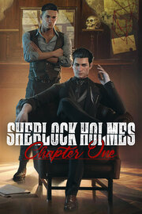

Sherlock Holmes Chapter One
Details
|  | |
| Playtime | 6h 2m 0s |
| Last Activity | 19.05.2023 20:08:49 |
| Added | 15.12.2023 17:11:24 |
| Modified | 12.02.2024 21:49:46 |
| Completion Status | Played |
| Library | Steam |
| Source | Steam |
| Platform | PC (Windows) |
| Release Date | 16.11.2021 |
| Community Score | 81 |
| Critic Score | 77 |
| User Score | |
| Genre | Adventure Indie |
| Developer | Frogwares |
| Publisher | Frogwares |
| Feature | Single Player |
| Links | Steam Epic GOG Wikia Wikipedia YouTube Twitch Official |
| Tag | |
Description


As Sherlock, your legacy is written by the decisions you make in this open world detective adventure. Deception, violence, and deduction are just a few resources in your arsenal—your mysterious companion and sounding board, Jon, is another.
Whether you choose brute force to solve problems or stay one step ahead of your enemies by using your wits to spot vulnerabilities, you decide what each situation demands as you hone your investigative skills. It’s time to confront your past so you can become the legend you’re destined to be.
.gif?t=1670417138)
KEY PILLARS
The Man Before: As a cavalier young Sherlock on the precipice of adulthood, you’ll earn your reputation in a way no game or story has explored before. We’ve never seen the youthful arrogance and naiveté of the man before the legend—now you’re living it.
Global Investigation: You never know where your next clue will come from. Explore and exploit the entire city in your pursuit of truth, using clues, rumors, disguises, tags, and pinned evidence to build a solid case within your mind palace.
And Stay Down: Weapons might help you in a pinch, but there’s something to be said for style—and you have it in spades. Spot enemy vulnerabilities with your brilliant observation skills, or exploit the environment to take someone down while keeping your own hands clean.

A Different Jon: Before John Watson, there was a different Jon - your best and only friend. But who is he, really?
A Darkening Tide: Set in the 19th century, the vibrant island in the Mediterranean promises anything but paradise. Political corruption and crime run rampant while the islanders cling to tradition and eschew outsiders, making your job even more difficult.
Truth and Lies: There are two sides to every story, and the proud islanders have their own ideas about truth and justice. It’s up to you to decide whether uncovering the truth will do more harm than good—and how that will shape the man you’ll become.